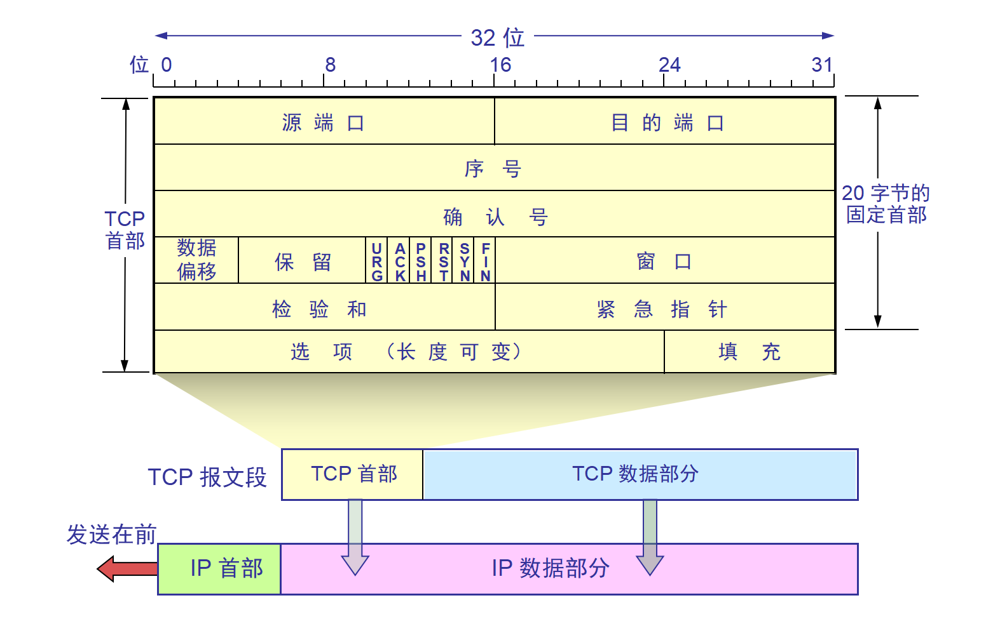
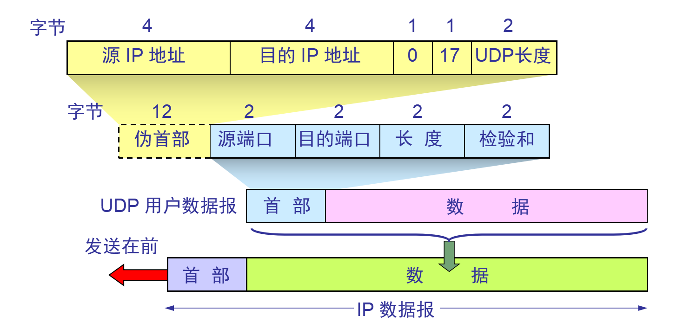

TCP 与 UDP
前言
本人平时学习及收集内容，欢迎参入一起讨论。
内容
- TCP
- UDP
- TCP 与 UDP 区别
一、TCP
1.1 TCP 首部格式

- 序号 seq：用于对字节流进行编号，例如序号为 301，表示第一个字节的编号为 301，如果携带的数据长度为 100 字节，那么下一个报文段的序号应为 401。[301,400]为序号 301 的数据长度，下一个则为 401
- 确认号 ack：期望收到的下一个报文段的序号。例如 B 正确收到 A 发送来的一个报文段，序号为 501，携带的数据长度为 200 字节，因此 B 期望下一个报文段的序号为 701，B 发送给 A 的确认报文段中确认号就为 701。
- 数据偏移：指的是数据部分距离报文段起始处的偏移量，实际上指的是首部的长度。
- 确认 ACK：当 ACK=1 时确认号字段有效，否则无效。TCP 规定，在连接建立后所有传送的报文段都必须把 ACK 置 1。
- 同步 SYN：在连接建立时用来同步序号。当 SYN=1，ACK=0 时表示这是一个连接请求报文段。若对方同意建立连接，则响应报文中 SYN=1，ACK=1。
- 终止 FIN：用来释放一个连接，当 FIN=1 时，表示此报文段的发送方的数据已发送完毕，并要求释放连接。
- 窗口：窗口值作为接收方让发送方设置其发送窗口的依据。之所以要有这个限制，是因为接收方的数据缓存空间是有限的。
1.2 三次握手

假设 A 为客户端，B 为服务器端。
- 首先 B 处于 LISTEN（监听）状态，等待客户的连接请求。
- A 向 B 发送连接请求报文段，SYN=1，ACK=0，选择一个初始的序号 seq=x。
- B 收到连接请求报文段，如果同意建立连接，则向 A 发送连接确认报文段，SYN=1，ACK=1，确认号为 x+1，同时也选择一个初始的序号 seq=y。
- A 收到 B 的连接确认报文段后，还要向 B 发出确认，确认号为 ack=y+1，序号为 seq=x+1。
- A 的 TCP 通知上层应用进程，连接已经建立。
- B 收到 A 的确认后，连接建立。
- B 的 TCP 收到主机 A 的确认后，也通知其上层应用进程：TCP 连接已经建立。
1.3 为什么 TCP 连接需要三次握手，两次不可以吗，为什么
为了防止已失效的连接请求报文段突然又传送到了服务端，占用服务器资源。（假设主机 A 为客户端，主机 B 为服务器端）
现假定出现一种异常情况，即 A 发出的第一个连接请求报文段并没有丢失，而是在某些网络节点长时间滞留了，以致延误到连接释放以后的某个时间才到 B。本来这是一个已失效的报文段。但是 B 收到此失效的连接请求报文段后，就误认为是 A 有发出一次新的连接请求。于是就向 A 发出确认报文段，同意建立连接。假定不采用三次握手，那么只要 B 发出确认，新的连接就建立了。
由于现在 A 并没有发出建立连接的请求，因此不会理睬 B 的确认，也不会向 B 发送数据。但 B 却以为新的运输连接已经建立了，并一直等待 A 发来数据。B 的许多资源就这样白白浪费了。
采用三次握手的办法可以防止上述现象的发生。例如在刚才的情况下，A 不会向 B 的确认发出确认。B 由于收不到确认，就知道 A 并没有要求建立连接。
1.4 四次挥手

数据传输结束后，通信的双方都可释放连接。现在 A 的应用进程先向其 TCP 发出连接释放报文段，并停止再发送数据，主动关闭 TCP 连接。
- A 把连接释放报文段首部的 FIN=1，其序号 seq=u，等待 B 的确认。
- B 发出确认，确认号 ack=u+1，而这个报文段自己的序号 seq = v。（TCP 服务器进程通知高层应用进程）
1.5 四次挥手的原因
客户端发送了 FIN 连接释放报文之后，服务器收到了这个报文，就进入了 CLOSE-WAIT 状态。这个状态是为了让服务器端发送还未传送完毕的数据，传送完毕之后，服务器会发送 FIN 连接释放报文。
1.6 如何保证可靠传输
- 应用数据被分割成 TCP 认为最适合发送的数据块。
- 超时重传：当 TCP 发出一个段后，它启动一个定时器，等待目的端确认收到这个报文段。如果不能及时收到一个确认，将重发这个报文段。
- TCP 给发送的每个包进行编号，接收方对数据包进行排序，把有序数据传送给应用层。
- 检验和：TCP 将保持它首部和数据的检验和。这是一个端到端的检验和，目的是检测数据在传输过程中的任何变化。如果收到段的检验和有差错，TCP 将丢弃这个报文段和不确认收到此报文段。
- TCP 的接收端会丢弃重复的数据。
- 流量控制：TCP 连接的每一方都有固定大小的缓冲空间，TCP 的接收端只允许发送端发送接收端缓冲区能接纳的我数据。当接收方来不及处理发送方的数据，能提示发送方降低发送的速率，防止包丢失。TCP 使用的流量控制协议是可变大小的滑动窗口协议。
- 拥塞控制：当网络拥塞时，减少数据的发送。
1.7 TCP 连接状态
CLOSED：初始状态。LISTEN：服务器处于监听状态。SYN_SEND：客户端 socket 执行 CONNECT 连接，发送 SYN 包，进入此状态。SYN_RECV：服务端收到 SYN 包并发送服务端 SYN 包，进入此状态。ESTABLISH：表示连接建立。客户端发送了最后一个 ACK 包后进入此状态，服务端接收到 ACK 包后进入此状态。FIN_WAIT_1：终止连接的一方（通常是客户机）发送了 FIN 报文后进入。等待对方 FIN。CLOSE_WAIT：（假设服务器）接收到客户机 FIN 包之后等待关闭的阶段。在接收到对方的 FIN 包之后，自然是需要立即回复 ACK 包的，表示已经知道断开请求。但是本方是否立即断开连接（发送 FIN 包）取决于是否还有数据需要发送给客户端，若有，则在发送 FIN 包之前均为此状态。FIN_WAIT_2：此时是半连接状态，即有一方要求关闭连接，等待另一方关闭。客户端接收到服务器的 ACK 包，但并没有立即接收到服务端的 FIN 包，进入 FIN_WAIT_2 状态。LAST_ACK：服务端发动最后的 FIN 包，等待最后的客户端 ACK 响应，进入此状态。TIME_WAIT：客户端收到服务端的 FIN 包，并立即发出 ACK 包做最后的确认，在此之后的 2MSL 时间称为 TIME_WAIT 状态。
1.8 TCP 滑动窗口


1.9 TCP 流量控制
流量控制是为了控制发送方发送速率，保证接收方来得及接收。
接收方发送的确认报文中的窗口字段可以用来控制发送方窗口大小，从而影响发送方的发送速率。将窗口字段设置为 0，则发送方不能发送数据。
1.10 TCP 拥塞处理
拥塞控制的一般原理
- 在某段时间，若对网络中某资源的需求超过了该资源所能提供的可用部分，网络的性能就要变坏——产生拥塞(congestion)。
- 慢开始与拥塞避免
- 快重传与快恢复
- 发送窗口的上限值
1.11 如何区分流量控制和拥塞控制
- 拥塞控制所要做的都有一个前提，就是网络能够承受现有的网络负荷。
- 拥塞控制是一个全局性的过程，涉及到所有的主机、所有的路由器，以及与降低网络传输性能有关的所有因素。
- 流量控制往往指在给定的发送端和接收端之间的点对点通信量的控制。
- 流量控制所要做的就是抑制发送端发送数据的速率，以便使接收端来得及接收。
- 流量控制属于通信双方协商；拥塞控制涉及通信链路全局。
- 流量控制需要通信双方各维护一个发送窗、一个接收窗，对任意一方，接收窗大小由自身决定，发送窗大小由接收方响应的 TCP 报文段中窗口值确定；拥塞控制的拥塞窗口大小变化由试探性发送一定数据量数据探查网络状况后而自适应调整。
- 实际最终发送窗口 = min{流控发送窗口，拥塞窗口}。
二、UDP
用户数据报协议 UDP，是面向无连接的通讯协议，是无连接的，尽最大可能交付，没有拥塞控制，面向报文（对于应用程序传下来的报文不合并也不拆分，只是添加 UDP 首部），支持一对一、一对多、多对一和多对多的交互通信。UDP 通讯时不需要接收方确认，属于不可靠的传输，可能会出现丢包现象，实际应用中要求程序员编程验证。例如：视频传输、实时通信。
2.1 UDP 首部格式

首部字段只有 8 个字节，包括源端口、目的端口、长度、检验和。12 字节的伪首部是为了计算检验和临时添加的。
三、TCP 与 UDP 区别
- UDP 是无连接的，即发送数据之前不需要建立连接。
- UDP 使用尽最大努力将会，即不保证可靠将会，同时也不使用拥塞控制。
- UDP 是面向报文的。UDP 没有拥塞控制，很适合多媒体通信的要求。
- UDP 支持一对一、一对多、多对一和多对多的交互通信。
- UDP 的首部开销小，只有 8 个字节。
- TCP 是面向连接的传输层协议。
- 每一条 TCP 连接只能有两个端点，每一条 TCP 连接只能是点对点的（一对一）。
- TCP 提供可靠交付的服务。
- TCP 提供全双工通信。
- TCP 是面向字节流。
- 首部最低 20 个字节。
参考资料
- TCP/IP 详解学习笔记
- 面试官，不要再问我三次握手和四次挥手
- TCP 三次握手和四次挥手
- 面试官问:TCP 为啥要 3 次握手和 4 次挥手？握两次手不行吗？
- 面试官问我：一个 TCP 连接可以发多少个 HTTP 请求？竟答不上来
- 动画：用动画给面试官解释 TCP 三次握手过程
联系作者
平凡世界，贵在坚持。

← web 缓存 webstock学习→